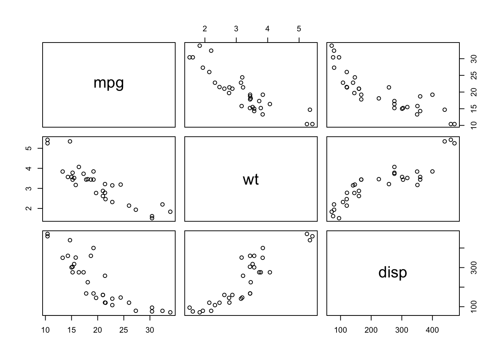

Demo: Visualization Techniques in ggplot2
In this walkthrough, we'll explore a bunch of standrd visualization types on a pair of simple datasets. For each visualization type, we'll start with a bare-bones example, and then move on to a more complex version to show off some of what ggplot2 and its friends can do. Feel free to move at your own pace; play around with each vis technique on your own datasets, or if you're feeling adventurous take a crack at the Challenge Problem at the very end.
Visualization Techniques
First we'll need some data. For this walkthrough, we'll use mtcars (which comes preinstalled with your R installation):
head(mtcars)## mpg cyl disp hp drat wt qsec
## Mazda RX4 21.0 6 160 110 3.90 2.620 16.46
## Mazda RX4 Wag 21.0 6 160 110 3.90 2.875 17.02
## Datsun 710 22.8 4 108 93 3.85 2.320 18.61
## Hornet 4 Drive 21.4 6 258 110 3.08 3.215 19.44
## Hornet Sportabout 18.7 8 360 175 3.15 3.440 17.02
## Valiant 18.1 6 225 105 2.76 3.460 20.22
## vs am gear carb
## Mazda RX4 0 1 4 4
## Mazda RX4 Wag 0 1 4 4
## Datsun 710 1 1 4 1
## Hornet 4 Drive 1 0 3 1
## Hornet Sportabout 0 0 3 2
## Valiant 1 0 3 1Bar Chart
- Used for comparable variables
- Compares quantitative values for different categories
- Highlights relative amounts
- Grouped/stacked bars can break each category into sub-groups
A simple Bar Chart in ggplot2
mtcars %>%
ggplot(aes(x = cyl)) +
geom_bar()
A slightly prettier Bar Chart with color and labels
ggplot(mtcars,
aes(x = as.factor(cyl), # Dual-encode x-value with color
fill = as.factor(cyl))) + # (just because it's pretty)
geom_bar() + # Add bars
xlab("Number of cylinders") + # Label the axes
ylab("Count") +
ggtitle("Count of cars by cylinders") + # Add a title
guides(fill = FALSE) # Remove the legend## Warning: `guides(<scale> = FALSE)` is deprecated.
## Please use `guides(<scale> = "none")` instead.
Histogram
- Looks like a bar chart… but the x-axis is continuous
- Y-axis shows count or relative frequency
- Highlights distribution
- Note: bin size makes a big difference!
A simple Histogram in ggplot2
ggplot(mtcars, aes(x = wt)) +
geom_histogram()## `stat_bin()` using `bins = 30`. Pick better value
## with `binwidth`.A better Histogram with scaling, 10 bins, labels, and color
ggplot(mtcars, aes(x = wt*1000)) + # Scale wt to lbs
geom_histogram(bins = 10, # Change the number of bins to 10
fill = rgb(0.1, 0.4, 0.5)) + # and fill with more aesthetically-pleasing color
xlab("Weight (lb)") + # Label the axes
ylab("Count") +
ggtitle("Distribution of cars by weight") # Add a title
Boxplot
- Also useful for highlighting distribution
- Calls out key values: median, 1st & 3rd quartiles, “fences”, outliers
- Use “jitter” to show actual values
- Reference lines can help provide context
- Can use annotations to show statistical significance
A simple boxplot in ggplot2
ggplot(mtcars, aes(x = as.factor(cyl), y = mpg)) +
geom_boxplot()
A better boxplot with original points, semi-transparent fill, and labels
library(ggpubr) # Useful library for making "publication-ready" graphics:
# We'll use the stat_compare_means(...) function to add significance
ggplot(mtcars, aes(x = as.factor(cyl), y = mpg)) +
geom_boxplot(outlier.shape = NA, # Hide outliers so they don't double-plot
fill=rgb(0.2, 0.4, 0.2, 0.6)) + # and change fill and opacity
geom_jitter(width = 0.01, # Add original datapoints (jittered)
alpha = 0.4) + # using transparency to avoid overplotting
geom_hline(yintercept = 30, # A reference line at y = 30
linetype = "dashed") + # and we'll make it dashed
annotate("text", label = "mpg = 30", # Always good to label reference lines,
x = 3.3, y = 31) + # but boxplots have weird x-coords:
# 1st category = 1, etc.
xlab("Number of cylinders") + # Label the axes
ylab("Fuel economy (mpg)") +
ggtitle("Distribution of mpg by # Cylinders") + # Add a title
stat_compare_means(comparisons = list(c("4","6"), # Add significance testing
c("6","8")),
method = "t.test",
aes(label = ..p.signif..))
Scatterplot
- Shows the relationship between two continuous variables
- Each point in the plot represents an observation
- You can change color or symbol to highlight groups
- Sometimes useful to show a trend line (regression)
A simple scatterplot in ggplot2
ggplot(mtcars, aes(x = wt, y = mpg)) +
geom_point()
A better scatterplot with scaled values, shapes, color, and labels
mtcars %>%
mutate(wt = wt * 1000) %>% # Scale the x-values
ggplot(aes(x = wt, y = mpg)) +
geom_point(size = 4, # Make the points a little bigger
aes(shape = as.factor(cyl), # Add an aesthetic to map #cyl to shape
color = as.factor(cyl))) + # dual encoded with color for visibility
stat_smooth(method = "lm", # Add a quadratic regression line
formula = y ~ x + I(x^2)) +
labs(color = "# Cylinders", # Relabel color/shape so that the
shape = "# Cylinders", # legend looks nice
x = "Weight (lb)", # Another way to label the axes
y = "Fuel economy (mpg)") +
ggtitle("Weight vs. fuel economy by # cylinders") # Add a title
Scatterplot Matrix (SPLOM)
- Scatterplots show the relationship between just two continuous variables at a time
- We can combine multiple scatterplots into a matrix to show additional relationships
A simple SPLOM using pairs()
pairs(~ mpg + wt + disp, data = mtcars)
A better SPLOM using GGally
library(GGally) # Useful library that extends some of ggplot2's functionality
# We'll use the ggpairs(...) function to make a classy SPLOM
ggpairs(mtcars,
columns = c("mpg","disp","hp"), # Select specific columns to compare
columnLabels = c("Fuel economy (mpg)", # Add clearer names for each column
"Displacement",
"Horsepower"),
aes(color = as.factor(cyl), # Use color to denote # cylinders
alpha = 0.4)) + # Set to semi-transparent
ggtitle("Fuel economy vs. displacement vs. horsepower by # cylinders") # Add a title
Line Chart
- Shows the trend in one variable, often over time
- Multiple lines can show multiple variables, or the same variable for multiple observations (must have the same scale!)
- Highlights “position switches”
Line charts don't really make sense for mtcars, so first we'll load a different dataset: Dr. Arbuthnot's baptism records from 1629-1710.
library(dplyr)
arbuthnot <- read.csv("http://www.openintro.org/stat/data/arbuthnot.csv") %>%
mutate(total = boys + girls)A simple line chart using ggplot
library(dplyr)
arbuthnot %>%
ggplot(aes(x = year, y = total)) +
geom_line()A better line chart, built with tidy data
library(tidyr)
# First, let's tidy up our data so it's tall instead of wide
arbuthnot_tidy <- arbuthnot %>%
select(-total) %>%
pivot_longer(names_to = "gender", values_to = "count", -year)
ggplot(arbuthnot_tidy, aes(x = year,
y = count,
color = gender)) + # Now we can map 'gender' to color to get 2 lines
geom_line() +
labs(color = "Gender", # Relabel color
x = "Year", # Label the axes
y = "Number of records") +
ggtitle("Dr. Arbuthnot's Baptism Records from 1629-1710 (by Gender)") # Add a title
Challenge Problem
Try building a parallel coordinates plot using ggplot2 on a dataset of your choice! Hint: you can accomplish this using some of the packages we've already loaded, or try building it on your own using geom_lines and some clever data wrangling!
# Your code here